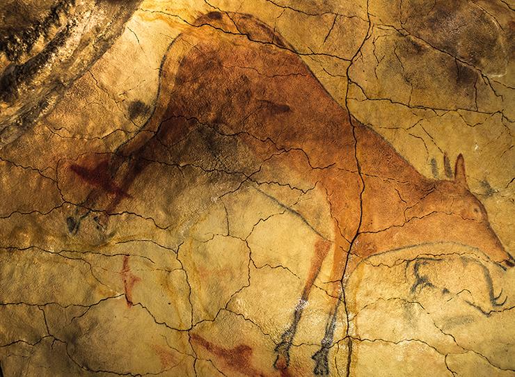
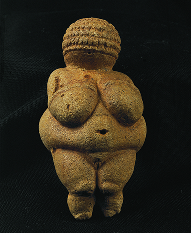
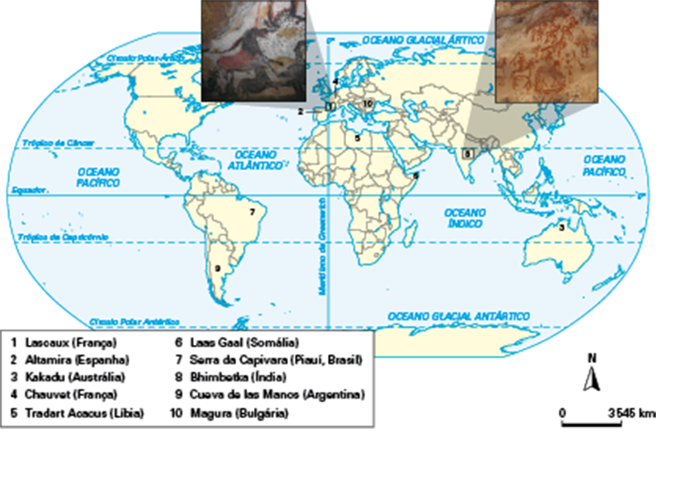
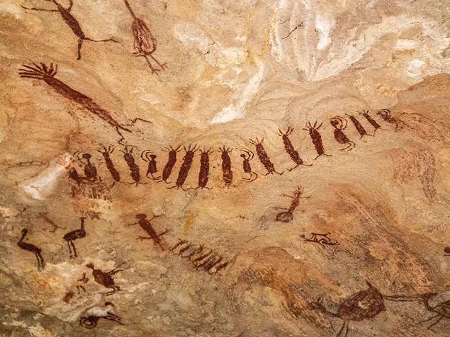
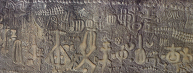
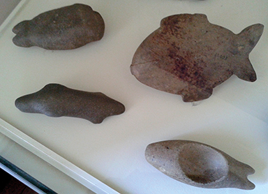
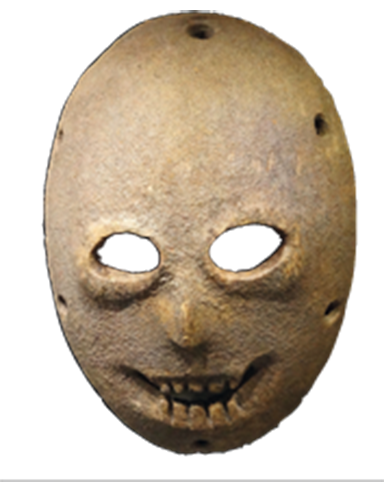
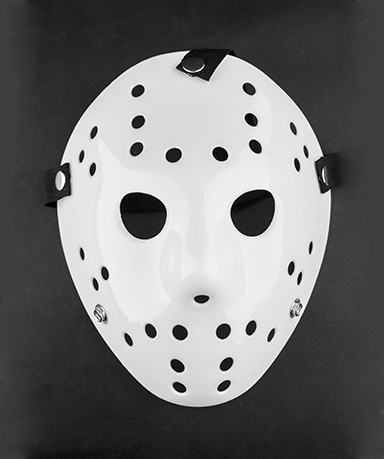
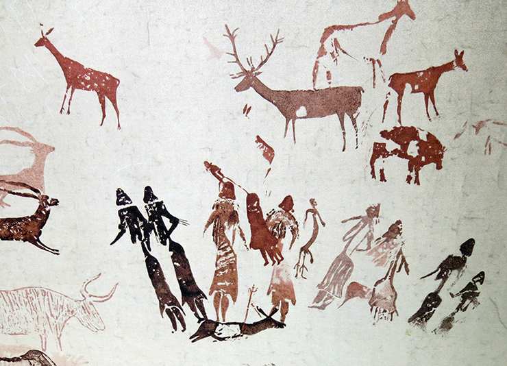

Bisão no sítio arqueológico de Altamira, na Espanha. c. 10000 a.C. – 15000 a.C.
A Pré-história do ser humano é marcada pela arte em suas diversas formas de manifestação. Contudo, pouco
se sabe da arte do período de mais de 30 mil anos, que envolve as principais descobertas de objetos
artísticos e murais pintados pelo ser humano primitivo, sobretudo as razões que levaram os povos desses
tempos remotos a se expressarem artisticamente. Dois temas centrais têm sido discutidos por críticos,
filósofos e artistas desde meados do século XIX, quando Darwin publicou
A origem das espécies
(1859): o primeiro trata da origem da arte; e o segundo, do desenvolvimento do estilo na arte
pré-histórica. Será que as pessoas desse período faziam arte sem refletir sobre o que produziam, por
simples necessidade de reproduzir o que estavam vendo ou havia intencionalidade nas criações?
Neste capítulo, serão estudadas algumas das funções da arte, tendo em vista seus
diferentes papéis ao longo da história, conforme o contexto sócio-histórico. Também será abordado como a
produção artística da Pré-história pode explicar a cultura do ser humano desse período.
Qual foi o papel da arte para o homem pré-histórico?
Que função ela desempenha para o ser humano na atualidade?
Há diferenças entre essas duas visões?
Neste capítulo serão abordadas as habilidades
EM13LGG601,
EM13LGG602,
EM13LGG603 e
EM13LGG604.
Arte em leitura
Observe a imagem abaixo. Trata-se de uma pintura
de cervo e tem entre 12 e 17 mil anos. Note o nível de
detalhe (no zoom) de algumas partes, como o focinho,
as sombras e o casco da pata. Considere os desgastes
que a imagem deve ter sofrido ao longo do tempo.
Agora, reúna-se com os colegas e discuta:
Em sua opinião, os trabalhos de artistas de rua devem ser mantidos nas cidades
ou apagados?
Explique.
Esses trabalhos são importantes para a vida na cidade? E
para as gerações futuras?
Por quê?
Se os seres humanos pré-históricos, egípcios, gregos e outros
povos tivessem realizado uma
ação semelhante, o que nós
teríamos perdido?
É importante preservar as
produções artísticas populares?
Como você acredita que isso
pode ser feito?

Jesus de Fuensanta/Shutterstock.com
Uma arte para lá de ancestral
Ao estudar a arte pré-histórica é importante, inicialmente, situá-la em dois grandes períodos: o da
arte paleolítica
(superior) e o da
arte neolítica
, que pode ter características diferentes, conforme a região. Vale salientar, no entanto, que as primeiras
manifestações artísticas datam do final do Paleolítico Inferior (300000 a.C. a 30000 a.C.) e estão
situadas em torno de 40000 a.C. A arte do Paleolítico Superior teve uma extensão de mais de 20 mil anos,
de 30000 a.C. a 9500 a.C. aproximadamente, quando principia o período da arte neolítica, com fim em 5000
a.C. No Neolítico, houve o aperfeiçoamento da arte, e foram desenvolvidos estilos. A descoberta das
possibilidades de uso dos metais também propiciou o surgimento de novas formas de criação na arte
neolítica. Entre as criações mais famosas do Neolítico estão os monumentos feitos com
megálitos
, como o de Stonehenge, cuja construção, sem o uso de tecnologias modernas, ainda intriga os
pesquisadores.
Neste capítulo, estudaremos, especialmente, a arte paleolítica supe-
rior, que se apresenta de quatro maneiras:
1.
objetos, normalmente de pequena dimensão ou miniaturas (encontra-
dos em geral nos restos dos acampamentos);
2.
murais pintados, desenhados ou gravados em paredes de locais ro-
chosos ou do interior de cavernas;
3.
esculturas em baixo-relevo – espécie de escultura em relevo –, gravadas
diretamente nas rochas das cavernas; e
4.
instrumentos rudimentares feitos com ossos, chifres e pedras.
A seguir, vamos examinar mais detalhadamente cada uma dessas for-
mas de manifestação artística e, paralelamente, procurar entender a fun-
ção que a arte exercia para esses povos.
Escultura em baixo-relevo feita em calcário, 18000 a.C., em caverna de Roc-de-Sers (Charente), na França.
Musée d’Archéologie Nationale, França.
Jack ma/Wikimedia Commons (CC BY-SA-3.0)
Miniaturas: a pequena proporção de uma
grande arte
A arte em miniatura, também chamada de “arte mobiliária”, era feita em pequenas
dimensões. Isso se deve, provavelmente, ao fato de os povos do período serem
nômades
, o que dificultava o transporte de objetos grandes.
Entre as miniaturas mais conhecidas estão as vênus paleolíticas. Muitas estatuetas
desse período foram designadas “vênus” em home-nagem à deusa romana da beleza, que é uma versão da deusa
grega Afrodite, em geral representada nua. Os arqueólogos que as descobriram, no século XIX, entenderam
que, de alguma forma, essas estatuetas cumpriam a função da deusa para o ser humano paleolítico, como
símbolo de fertilidade e beleza. Embora o termo “vênus” tenha se consolidado na arte, há estudiosos
contemporâneos que evitamempregá-lo, pois não se sabe ao certo que função as estatuetas cumpriam.
Supõe-se que as curvas abundantes, assim como a ênfase nos seios, na região
abdominal volumosa e na genitália, tenham sido feitas com o objetivo de simbolizar a reprodução e a
sobrevivência da espécie, criando um objeto para ser utilizado em rituais. A vênus mais conhecida e
citada
é a Vênus de Willendorf (28000 a.C. a 25000 a.C.), mas há diversas outras, como a Vênus de Věstonice
(29000 a.C. a 25000 a.C.) e a Vênus de Lespugue (26000 a.C. a 24000 a.C.). Uma das características que
mais chamam a atenção nessas estatuetas é a estilização
das cabeças – e, por vezes, de outras partes do corpo. Há, ainda, a ausência de braços (ou braços
bastante
pequenos), e o ventre é pronunciado.

Vênus de Willendorf (28000 a.C. a 25000 a.C.).
Erich Lessing/Album/Fotoarena
Murais de ontem e de hoje
A pintura mural no sítio arqueológico de Kakadu, no nordeste da Austrália – que abrange umperíodo de
aproximadamente 20 mil anos em relação ao tempo presente –, mostra um dos poucos exemplares de pinturas
pré-históricas que têm uma espécie de raio-X do corpo (revelando os ossos) e seres com cabeça
aparentemente estilizada.
Michael Runkel/ImageBroker/Fotoarena
Grande parte dos murais pré-históricos está no interior de cavernas, mas alguns
murais estão localizados na parte externa.Os trabalhos feitos em baixo-relevo estão geralmente na parte
mais próxima da saída. Já as pinturas e gravuras se situam nas áreas mais profundas das cavernas. Será que
existe uma razão para isso? Os pesquisadores acreditam que, para as pessoas dessa época, as pinturas
tinham a função de propiciar poder mágico àquilo que era reproduzido nelas. Assim, quando pintavam
animais, acreditavam que, se os atingissem no interior da caverna com suas lanças, também o fariam no
mundo concreto. Já naquela época os animais eram parte importante da alimentação dos povos pré-históricos,
que dependiam daqueles para a sobrevivência. Provavelmente por esse motivo, as pinturas rituais eram
realizadas em locais mais reservados, e não nas áreas de convivência.
Para a arte, o naturalismo
representa seres, formas,
objetos etc. do modo como
são encontrados no mundo
real. Muitas vezes, diz-se
que essa representação
é da maneira como esses
elementos se apresentam
na natureza. Entretanto, é
importante esclarecer que
a palavra “natureza”, nesse
caso, assume um significado
mais amplo, que envolve
tanto o ambiente natural (a
vegetação, as árvores, as
rochas etc.) como o restante
do mundo em que vivemos.
... o ramo dedicado ao
estudo da Estética possibilita
a reflexão sobre o fenômeno
artístico.
Por dentro da arte
As pinturas nas áreas profundas das cavernas eram provavelmente feitas em grupo,
pois, para que uma primeira pessoa pintasse, uma segunda deveria iluminar as paredes e uma terceira
fornecer as tintas. Além disso, muitas pinturas foram realizadas no teto ou em partes altas, o que revela
a necessidade de uma espécie de plataforma sobre a qual o pintor deveria subir para alcançar essas áreas.
Os pigmentos (pós coloridos) utilizados para criar as tintas eram o manganês, o carbono e o ocre, os quais
contavam com variações em vermelho, preto, amarelo e marrom. Para criar a liga, utilizavam clara de ovo,
gordura animal, água, saliva e até sangue. A principal rocha sobre a qual foram aplicadas as pinturas
pré-históricas foi a calcária, que tem, em sua composição, principalmente o carbonato de cálcio e o
magnésio.
Pigmentos usados para produzir tintas.
Marco Almbauer/Wikimedia Commons (CC BY-SA-3.0)
Marco Almbauer/Wikimedia Commons (CC BY-SA-3.0)
Marco Almbauer/Wikimedia Commons (CC BY-SA-3.0)
As manifestações artísticas, entre elas a arte muralista pré-histórica, são formas
de comunicação e
expressão usadas pelos seres humanos ao longo do tempo. Por esse motivo, são também estudadas por outras
áreas do conhecimento.
Nessa perspectiva, vemos que a arte mural também é estudada na Arqueologia, uma
ciência que faz
parte dos estudos históricos, em que se analisam os costumes e a cultura dos povos antigos. Para esses
estudos, nos locais onde há certa concentração de material, como inscrições, fósseis, artefatos e
monumentos, criam-se os sítios arqueológicos. Nesses lugares, encontra-se a maior parte da arte mural
pré-histórica. Entre os principais sítios arqueológicos do mundo que contêm murais pré-históricos, podemos
destacar dez mais conhecidos, indicados no mapa a seguir.

... as partículas de pigmentos
podem ser analisadas para
identificação do tipo e do
teor de minerais presentes
em sua composição, sua
estabilidade térmica, entre
outros aspectos.
... a preservação e a
conservação das obras de
arte são possíveis, entre
outras formas, pela criação
de coleções em museus e
por políticas de proteção
ao patrimônio histórico e
artístico. Também vemos
que é fundamental entender
o contexto histórico em
que uma obra de arte foi
produzida para compreender
seu conteúdo.
As pinturas murais são utilizadas desde os tempos pré-históricos pelas mais diversas
civilizações, como a egípcia, a grega, a romana, entre outras. Na época contemporânea, uma das mais
proeminentes manifestações em forma de mural é o
grafite
, um estilo de arte urbana, e originalmente de rua, que surgiu entre o final da década de 1960 e início
dos anos 1970 e está presente na maior parte das grandes cidades do mundo. Paralelamente à técnica de
grafite, surgiram, entre outros métodos utilizados na arte de rua, o
estêncil
– um recorte feito em negativo, utilizando plásticos duros (como os das radiografias), papelão, cartolinas
etc., para imprimir uma imagem em uma parede ou um muro – e os lambe-lambes, que consistem em desenhos,
poemas, mensagens de manifestação política ou social ou colagens diversas, feitos em papel e fixados
geralmente nos muros e nas paredes da cidade.
Observe, a seguir, alguns exemplos de intervenções de rua.
Obra do grafiteiro, pintor, escultor e artista 3D Pixote Mushi (de Diadema, São Paulo), que estava na
Avenida 23 de Maio, em São Paulo. Foi apagada a pedido da Prefeitura de São Paulo em 2017.
Obra de Banksy, um dos artistas mais renomados no universo cultural do grafite. O mural grafitado com
estêncil, em que um trabalhador remove pinturas rupestres pré-históricas (2008), está na Leak e Street, em
Londres.
Courtesy of Pest Control Office, Banksy, London, 2008. Foto: Scott Kohlhagen/Alamy/Fotoarena
Trabalho do Profeta Gentileza (1917-1996), personagem das ruas do Rio de Janeiro que fez 1,5 quilômetro de
inscrições em 56 pilastras do Viaduto do Gasômetro. Gentileza é reconhecido, principalmente, por sua frase
“Gentileza gera gentileza”. Devido à ação de vândalos, seus trabalhos foram apagados. A Prefeitura do Rio
cobriu as obras com tinta cinza, mas, devido às críticas da população, os murais foram recuperados e
tombados pelos órgãos de proteção. Em 2016, entretanto, sofreram novos ataques de vandalismo.
Victor Silva/CPDoc JB
O vandalismo contra as obras do Profeta Gentileza teve repercussão inclusive na
música. Marisa Monte, em homenagem ao profeta, compôs uma canção em que reflete sobre a remoção das obras
de Gentileza depois de terem sofrido vandalismo. Já o artista Banksy mostra um trabalhador removendo as
pinturas pré-históricas, semelhante ao que ocorreu com os trabalhos de Gentileza e do artista Pixote
Mushi. Na verdade, uma parte significativa dos grafites
que estavam na Avenida 23 de Maio foi apagada.
Mãos à obra
Com base em uma das funções da arte, que é discutir criticamente os temas sociais da
atualidade, crie um cartaz como os do Profeta Gentileza. O cartaz deve conter uma mensagem de gentileza
para um tema que tenha sido alvo de mensagens ou momentos de ódio, no seu bairro, em sua cidade ou no
país. Para isso, utilize uma cartolina e crie um tipo de caligrafia e layout simples, como o do cartaz do
profeta. Dê um título ao trabalho para que as pessoas entendam o tema de que você está tratando. O cartaz
pode ser fixado em um mural na escola para que todos leiam a mensagem
Na Avenida Brasil, em um muro, um grafiteiro reviveu a imagem do Profeta Gentileza.
Foto Eurico Dantas/Agencia O Globo
Discussão em sala
Arte na cidade
Agora, reúna-se com os colegas e discuta:
Em sua opinião, os trabalhos de artistas de rua devem ser mantidos nas cidades
ou apagados?
Explique.
Esses trabalhos são importantes para a vida na cidade? E
para as gerações futuras?
Por quê?
Se os seres humanos pré-históricos, egípcios, gregos e outros
povos tivessem realizado uma
ação semelhante, o que nós
teríamos perdido?
É importante preservar as
produções artísticas populares?
Como você acredita que isso
pode ser feito?
Arte pré-histórica brasileira
Em geral, quando nos referimos à história do Brasil, dizemos que nosso país tem
apenas 500 anos. Contudo, o nosso continente já era amplamente habitado quando os colonizadores chegaram à
região. Estima-se que, apenas no Brasil, havia entre 2 e 10 milhões de indígenas, falantes de
aproximadamente 1 300 línguas.
A visão de que o Brasil é um país jovem é considerada etnocêntrica. Embora os povos
pré-históricos não possam ser, evidentemente, classificados como “brasileiros”, eles já habitavam o lugar
há muitos milhares de anos.
Entre os locais em que podem ser encontrados exemplos de arte pré-histórica no
Brasil, destacam-se os sítios arqueológicos da Serra da Capivara, no Piauí.
O Parque Nacional da Serra da Capivara, criado em 1979, abriga aproximadamente 1 000
sítios arqueológicos, onde já foram encontrados esqueletos humanos, artefatos de pedra e um conjunto de
cerca de 30 mil figuras coloridas distribuídas pelas pinturas rupestres da região, em que estão
representadas, entre outras, cenas de dança, de sexo e de parto. Atualmente, é considerado o maior
conjunto de pinturas pré-históricas do mundo. No artigo “Datações de pinturas rupestres da área do Parque
Nacional da Serra da Capivara”, de 1998, a pesquisadora Maria Conceição Soares Meneses Lage cita que o
ocre vermelho permite datar boa parte dessas pinturas entre 15000 a.C. e 23000 a.C. Embora não formem um
conjunto homogêneo, muitas das pinturas apresentam símbolos estilizados, pressupondo movimento da forma
humana ou de animais. Essas representações procuram transmitir mais uma sensação do que uma observação
estática. Em meio à grande quantidade de figuras, há também formas geométricas.
Os desenhos e as pinturas rupestres, como os encontrados na Serra da Capivara, são feitos com pigmentos,
sendo também chamados de
pictogramas
. É importante não confundir essas pinturas e esses desenhos com os
petróglifos
, que são gravuras formadas pela remoção de parte da superfície da rocha. Nesse caso, são utilizadas
técnicas como incisão, entalhe, abrasão ou raspagem. Os petróglifos podem ser figuras ou símbolos
estilizados.
... etnocentrismo diz respeito
às razões pelas quais
determinado povo acredita
que seus valores e sua
cultura são superiores não só
em relação a outros povos
e nações contemporâneos,
mas também se comparados
a povos do passado.
Indivíduos com tendências
etnocêntricas julgam outros
especialmente em termos
de idioma, comportamento,
costumes e religião.

Pintura rupestre da Serra da Capivara.
Evelyn Sampaio/iStockphoto.com
Além do Parque Nacional da Serra da Capivara, há inúmeros outros registros da arte
pré-histórica no
Brasil. Entre estes estão os
zoólitos
, miniaturas que representam animais ou partes de animais, localizados em depósitos de materiais orgânicos
e de calcário denominados sambaquis. Mas há também objetos que representam seres híbridos (zoomorfos), em
uma mistura de humano e animal bastante comum no período pré-histórico da nossa região.
Mais
A Pré-história brasileira em Lajedo de Soledade (RN)
, TV Brasil.
Assista a um episódio desse programa sobre pinturas e gravuras rupestres na região
de Lajedo de Soledade, no Rio Grande do Norte. A equipe do programa foi ao semiárido nordestino e
registrou imagens de um importante sítio arqueológico brasileiro em plena caatinga. Com o auxílio de
arqueólogos e paleontólogos, a equipe apresentou diversas pinturas e gravuras rupestres criadas por
aqueles que habitaram a região há milhares de anos.
Disponível em: http://p.p4ed.com/GRIUT.

Petróglifos encontrados na Pedra do Ingá, na Paraíba.
Helder da Rocha (CC BY-SA 2.0)/Wikimedia Commons

Zoólitos.
Evelyn Sampaio/iStockphoto.com
Templo central da Oficina Brennand.
Valdiney Pimenta (CC BY-SA-2.0)/Flickr.com
Outras linguagens da arte pré-histórica
Embora as pinturas e esculturas pré-históricas sejam comumente mencionadas quando se
fala de
arte desse período, é importante observar outras linguagens da arte que estão presentes desde tempos tão
remotos. Escavações de 2008 e 2012 revelaram os instrumentos mais antigos encontrados até agora: flautas
feitas de ossos que datam de um período situado entre 41000 a.C. e 33000 a.C. Uma delas é a flauta
encontrada na caverna Geissenklösterle, na Alemanha, que, a partir de análises dos pesquisadores usando o
teste do carbono, estima-se ter 43 mil anos de idade.
Outras flautas foram encontradas, dessa vez, na caverna de Hohle Fels, também na
Alemanha. O
professor Nicholas Conard, pesquisador responsável por essas descobertas, em entrevista à BBC Brasil,
disse que fazer música era uma atividade comum entre os humanos que viveram cerca de 40 mil anos atrás.
Ele ainda afirma que fica cada vez mais claro que a música era algo cotidiano e que ela era utilizada em
diversas situações, assim como fazemos na atualidade, possivelmente com fins religiosos ou mesmo
recreativos.
Segundo cientistas, a interferência da arte e da cultura logo no começo da
trajetória do ser
humano moderno seria uma possível ajuda para explicar o motivo de sobrevivência da espécie, em contraste
ao homem de Neandertal, que foi extinto: A música pode ter contribuído para a formação de redes sociais
mais amplas e, assim, talvez tenha facilitado a expansão territorial dos humanos modernos, em detrimento
dos neandertais, mais conservadores culturalmente e mais isolados demograficamente [...].
(BBC Brasil.
“Estudo alemão identifica flauta de 35 mil anos”. 25.06.2009. Disponível em:
www.bbc.com/portuguese/cultura/2009/06/090625_instrumentoantigo.shtml. Acesso em: 24 abr. 2018.)
A Pré-história também é marcada pelo teatro e pela dança de diferentes formas. Para o historiador do
teatro Léon Moussinac, por exemplo, quando os antigos seres humanos se reuniam ao redor do fogo para
dançar, as imitações que faziam de animais, a linguagem e a gestualidade já eram uma forma de teatro. A
imitação, ou a recriação, da realidade, que em arte é chamada
mimese
, é o primeiro fundamento da expressão artística. Nesse sentido, a representação do xamã (curandeiro
responsável pelos rituais mágicos) diante dos espectadores que o observavam em sua prática, com seus
gestos, suas expressões faciais, fazendo provavelmente uso de máscaras e emitindo sons os mais diversos,
era também uma forma rudimentar de teatro.

Universal History Archive/Getty Images

maradon 333/Shutterstock.com
As máscaras mais antigas descobertas no mundo têm aproximadamente 9 mil anos. As primeiras de uma série
foram encontradas em um deserto de Israel, em 1983. A máscara de hóquei (à direita) parece ter sido
inspirada nas da Pré-história, não?
A dança na Pré-história é bastante estudada pelos mais diversos estudiosos,
como
antropólogos, historiadores da arte, pesquisadores da dança etc. As principais referências de que havia
prática de dança durante o Paleolítico Superior têm origem nos vários pictogramas e petróglifos que
retratam cenas de pessoas em posição de dança, e nas evidências de que se fazia música nessa época, uma
vez que instrumentos percussivos e de sopro foram encontrados em sítios arqueológicos. Com base no estudo
dos povos cujos costumes são transmitidos de geração em geração, pesquisadores acreditam que, entre as
funções que a dança exercia para os povos pré-históricos, estão comemorar uma boa caçada, cultuar os
mortos e realizar rituais para promover a cura de enfermidades.

Decalque de Henri Breuil de uma pintura rupestre na Roca de los Moros, na Espanha.
Enric (CC BY SA 3.0)/Wikimedia Commons
Aplicando conhecimentos
1
Em que período da Pré-história é possível observar
os primeiros vestígios de arte?
2
Naturalismo, em arte, é a representação:
do que é observado na realidade.
de formas geométricas naturais.
de elementos abstratos que se remetem à natureza.
de figuras em meio à natureza
3
Qual é a diferença entre pictograma e petróglifo?
4
Analise as sentenças a seguir:
A Vênus de Willendorf, provavelmente a mais famosa das vênus pré-históricas, é um exemplo de
escultura em baixo-relevo devido à sua pequena
dimensão.
Os povos pré-históricos do Paleolítico Superior
eram nômades e, por esse motivo, criaram totens,
com o objetivo de protegê-los em suas longas peregrinações e também para que não se perdessem.
Os murais pré-históricos na Europa foram feitos
predominantemente na parte mais profunda das
cavernas, onde há pouca luz, dificultando o trabalho de pintura. Por esse motivo, acredita-se que
as criações eram feitas em equipe, com divisão
do trabalho.
É correto afirmar que:
todas são incorretas.
todas são corretas.
apenas a I é correta.
apenas I e II são corretas.
apenas a III é correta.
5
Como se dava a produção das tintas na Pré-história?
Consolidando saberes
1
UFMS O monumento megalítico, ou megálito, do grego
mega
,
megalos
, grande, e
lithos
, pedra, designa uma construção monumental com base em grandes blocos de pedras rudes. Stonehenge é um
monumento megalítico, localizado próximo a Amesbury, no condado de Wiltshire, cerca de 13 quilômetros a
Noroeste de Salisbury, na Inglaterra. A que época histórica pertence o monumento megalítico ou megálito?
Idade do Bronze.
Classicismo.
Renascimento.
Antiguidade Clássica.
Período Helenístico.
2
UFG As pinturas rupestres são evidências materiais do
desenvolvimento intelectual dos seres humanos. Embora tradicionalmente estudadas pela Arqueologia,
elas ajudaram a redefinir a concepção de que a História se inicia com a escrita, pois
funcionam como códices velados de uma comunidade à espera de decifração.
expressam uma concepção de tempo marcada
pela cronologia.
indicam o predomínio da técnica sobre as forças
da natureza.
atestam as relações entre registros gráficos e mitos de origem.
registram a supremacia do indivíduo sobre os
membros de seu grupo.
3
UFBA Os usos, os costumes, as tradições, as técnicas e as formas de ser
que caracterizam os povos ao
longo da história da humanidade e que constituem a
cultura relacionam-se e influenciam-se mutuamente.
Com base nessa afirmação e nos conhecimentos sobre cultura, pode-se concluir:
01.
Costumes cotidianos e técnicas de produção de utensílios eram passados de um
povo para outro desde a
Antiguidade, através do comércio, das campanhas militares e das migrações sistemáticas.
02.
A tradição oral como fonte de recuperação da memória nas sociedades modernas foi
extinta e superada
pelo aparecimento da escrita e do registro gráfico dos fatos acontecidos ao longo da história dessas
sociedades.
04.
As expressões populares da cultura caracterizam-se pela diversidade de formas e
origens, pela
espontaneidade e pela marca das experiências regionais, o que contribui para a formação da consciência
regional dos diferentes grupos sociais.
08.
A dominação política e militar por povos culturalmente diferentes daqueles que
foram conquistados pode
resultar em variadas formas de síntese cultural, observadas, dentre outras, através de transformações
produzidas nas línguas faladas entre eles.
16.
Os povos ágrafos, por não usarem a escrita, valem-se de outros recursos para se
comunicar,
destacando-se, dentre esses, os rituais, as festas e as cerimônias, de cunho religioso e/ou profano.
32.
A preservação de hábitos do cotidiano e de valores sociais antigos, por parte de
populações das áreas
rurais brasileiras, tem contribuído para impedir a penetração dos meios de comunicação mais eficientes,
a exemplo do rádio e da televisão.
Soma:
4
UFBA Dentre as manifestações mais importantes da
arte pré-histórica estão as esculturas feitas em pedra
que representam figuras femininas nuas, de corpos
volumosos e rostos esquematizados. Uma das mais
conhecidas é a “Vênus de Willendorf” reproduzida
a seguir.
Reprodução
Explique por que motivo o corpo feminino era representado nessas esculturas
pré-históricas com curvas exageradas e dando-se ênfase aos órgãos sexuais.
Superação
UFBA
Leia o texto a seguir.
A arte pré-histórica é uma arte de linhas e croquis; é uma etapa além da
percepção, um artifício que ajuda a reter a imagem na mente. Na arte pré-histórica, encontramos figuras
humanas, geralmente armadas, em ação, seja perseguindo animais, lutando ou dançando. Os animais são
representados de forma naturalista, ou seja, reproduções de imagens perceptíveis. As figuras humanas, pelo
contrário, estão muito estilizadas; se estão em movimento, os braços e as pernas são alargados. O objetivo
do artista foi indicar o movimento; as formas são ditadas por sensações internas mais que observação
externa. Os dois principais estilos pré-históricos são vitalistas e se acham determinados pela imagem
captada exteriormente e pela sensação internamente sentida. A arte pode haver estado associada com ritos,
com a intenção de exercer os poderes mágicos através de um retrato fiel que apresenta naturalismo nas
representações animais. Já o símbolo estilizado e dinâmico da forma humana é determinado por um sentimento
interno.
(Adaptado de: READ, H. Imagen e Idea. La función del arte en el desarollo de la conciencia humana.
México:
FCE, 2003. p. 23-31.)
Com base no texto e nos conhecimentos sobre o tema, assinale a alternativa que
apresenta, correta e respectivamente, as imagens da arte pré-histórica que representam o estilo animal
naturalista (reprodução de imagens perceptíveis) e os símbolos estilizados e dinâmicos da forma humana
determinados mais pela sensação que pela observação e que buscam indicar o movimento.


![Trabalho do Profeta Gentileza (1917-1996), personagem das ruas do Rio de Janeiro que
fez 1,5 quilômetro de inscrições em 56 pilastras do Viaduto do Gasômetro. Gentileza é reconhecido,
principalmente, por sua frase “Gentileza gera gentileza”. Devido à ação de vândalos, seus trabalhos foram apagados.
A Prefeitura do Rio cobriu as obras com tinta cinza, mas, devido às críticas da população,
os murais foram recuperados e tombados pelos órgãos de proteção. Em 2016, entretanto, sofreram novos ataques de vandalismo.](./assets/img/ID015-F015-2020-EM-ART-1_-L1-U1-FU-C2.png)